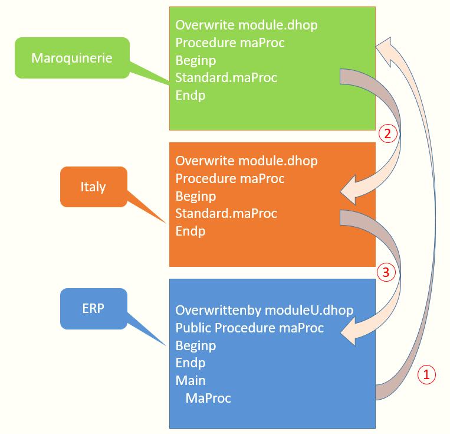

Pour un développeur habitué à la surcharge des fonctions, le fonctionnement de la surcharge multiple des fonctions est très simple.
Chaque add-on est développé séparément en surchargeant le module de base, et à l'exécution l'appel de la fonction standard va se faire en cascade en descendant la pile des add-on décrite dans le fichier overwrite.txt
Dans ce contexte, il n'y a rien de spécial. Si la fonction est absente d'un niveau, l'exécuteur cherche la fonction au niveau en dessous.
